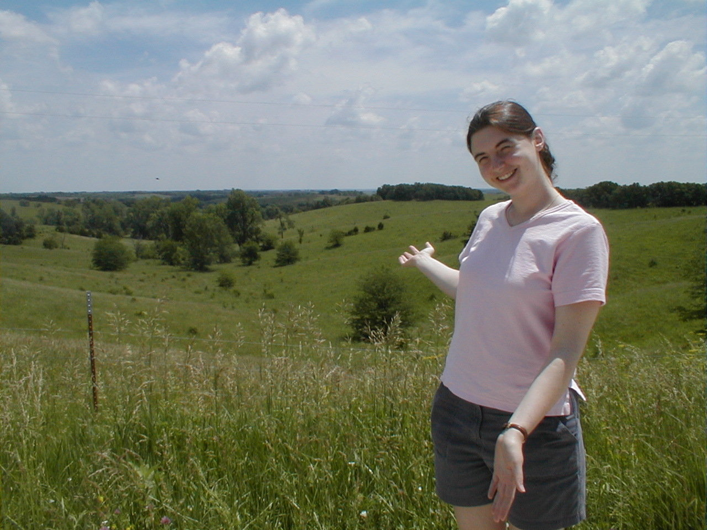

Day 28: June 8, Chillicothe, MO to Kirksville, MOPrevious Day - Home - Next Day Photo of the DayHolly showing off the Missouri hills. Keegan's LogDay 28: June 8, Chillicothe, MO to Kirksville, MO Mileage: 74.97 milesWeather: High 80s, Mostly sunny, Light tailwinds Vertical Climb: 2800 feet Riding Time: 4:45 This morning we had our breakfast at the hotel, dad and I got our bikes ready and Holly packed the car to follow along on the route. Holly had wanted to ride along, but unfortunately we couldn't find a bike or a way to get her car to Kirksville, so she settled for driving with our route. We pulled out at about 7:20 and headed straight for Highway 36, a divided four-lane highway without much of a shoulder. I left a little behind dad, and I caught up at about 5 miles into the ride, but unfortunately my back tire blew out just as I caught him. Luckily there was a sag nearby changing another flat tire, so the change went pretty quickly. Holly had driven ahead a ways and waited for us by the side of the road, I stopped for a minute to rest. We were riding with the sweep at the very back of the pack, and by the time I caught up to dad again he had stopped to fix a loose cleat on his shoe. The next stop was at a store at about 20 miles into the route, Holly was waiting for us again, we stopped long enough to grab a drink and continue on, the sweep in tow. The ride began with some long, slow hills along Highway 36, but when we left the big highway around mile 26 we reached the roller coaster hills. For the rest of the day we were either going up or down, the hills are all different sizes, some easy and some hard, but they were constant. Reaching the crest of a large hills you would see some hills that go down and some hills that go up, leading to another large hill. The hills weren't as difficult as I had expected, but they were relentless, my shifters got a good workout today. The first and only sag was not until 47 miles into the route, an awfully long but doable stretch. Holly stopped on the side of the road twice between the store and the sag, she would pull her car off the road and sit on the hood reading Chuck's book, waving to the passing cyclists. I would stop for a few minutes each time, then go and catch up to the sweep while Holly went ahead to find a new spot. We reached the lunch stop not long after 11:00, the staff had prepared sandwiches and drinks for us. We stayed and relaxed for a while, being careful not to sit down for fear the ticks would find us. But all-too-early it was time to move on again, only 28 miles of riding to go. Holly was waiting about 15 miles down the road, she found a side road with a wonderful view of some of the Missouri rolling hills. I snapped a few pictures of the countryside, see the website for the results. Time to catch up again, I found dad and Chuck just after they had taken a quick stop. The remaining road wasn't much different, more ups and down before we finally turned off the highway and found the Days Inn. Dad did the right thing and filed a report with the police for a bad semi driver who tried to kill me, driving too fast and too close to the shoulder with an oversized load. The hotel is very nice, we have a big atrium with a restaurant and a swimming pool. Holly and I drove to town to get some lunch and see the sights, then came back in time for route rap and a dinner in the hotel. Holly got a room in the hotel and is going to stay with our group until tomorrow morning, when she's going to drive back to Lawrence. Tomorrow is a big day, we cross the Mighty Mississippi into Illinois, and we leave the rolling hills of Missouri. Phil's LogThere were 148 hills on the ride today, just between the morning sag stop and the end. A All of hem are behind us now. Phew, we've had enough of roller-coaster hills for a while. This is pretty country. Outstanding the most were the bird calls. We normally hear only te closest ones over our self generated wind noise, but speeds were so slow today on the uphills that we heard many more than usual. But we really just concentrated on the hills. As much as bird calls, we heard our derailleurs shifting, sometimes regrettably under load as we tried not to lose it on an upgrade. And with apologies to my few friends from Missouri, the rods we've seen here are the worst in the nation. The diving lanes are narrow and often broken at the edges. The shoulder, or breakdown lane, if there even is one, is a broken up mess of potholes and gravel, rarely rideable with our skinny high pressure (110 psi) tires. So we had to stay single file and be extra cautious. And a truck driver today posed a particular fear for Keegan and myself. It was on State Road 11 North, a rural, hilly, twisty road. We heard the truck approach, we always do hear the tire noise of cars and trucks. But this one, when he was short behind us, leaned on his air horns with two longs, a short, and a long blast, the same as a train does at a crossing. I rode as close to the edge of the pavement as I possibly could, unable to run off the road as the underbrush there poses another set of hazards. It went by, fast and close. It was a tractor trailer with a flatbed rear, loaded with the huge rolls of hay used out here, two wide, and wider than the bed. The truck even had a WIDE LOAD sign on the back, but the driver (of trailer license number RS 4550) didn't think that his wide load should cause any extra concern on HIS part, it was apparently our problem. Not much you can do; I reported the incident to the state troopers by phone but that's probably the end of it. We leave Missouri by crossing the Mississippi River at 70.7 miles into tomorrow's ride. Can't weight. (That number 70.7 should be easy for Keegan and I and any electrical types to remember, it is 100 radical 2 divided by 2.) I'm sitting in the Day's Inn parking lot, as far as I can from the noise of air conditioner compressors, on the bed of a crane truck with my feet up on the back tires. Nice spot to view the sunset. I hope that they don't mind. Back to yesterday's interview with Leslie and JJ. Tracy, the tour leader, told us several days into the tour a funny story about JJ. He had phoned her some weeks before the ride asking if she could buy a couple of bicycles for he and Leslie in California. They didn't even have bikes for the ride. Most of their training had been done in health clubs on exercycles.. Tracy was pretty skeptical! This was not the sort of question a well seasoned bicyclist would ask. JJ just told Tracy, "We'll be ready." They ended up buying their bicycles in Manhattan, and their on road training were a few jaunts in Central Park, and one ride to Bear Mountain. They decided to come on this trip because they wanted to go away together. They did NOT want to go on a cruise, the wanted "exercise and outdoor stuff". But they were not bicyclists. They found CrossRoads on the web (www.crossroadscycling.com). They love to travel and had the time. JJ has seen much of the world, but they thought together that they should see our own states. They saw it as challenge, experience, and exercise. So they tried to train on old cross bikes in Central Park,, but the February, March, and April weather was terrible. I asked Leslie, who is perhaps 5'2" and pretty light, how se knew she could do it. She answered that she didn't really know, but knew she could sag (ride in the sag wagon) if she needed to do so. JJ is a brawny guy, not real tall by some standards but he looks strong, big arms and legs and he looks like strength. And he sounds like New York (wonderful to my ears!) Together the two just seem so far removed from their Manhattan apartment that one wonders how they can be here. But on knowing them a while, you just know that these two can do anything they take on. Both took applause on each of the two 100+ mile tough Mojave Desert days in California. It was the first time they had ridden centuries. And they just don't stoop. Leslie has had two bad spills, and sported a pretty nasty case of road rash for a while, she still has an inch thick hematoma on her left hip. They just ride, whatever may come. No one here is more respected. They are easy spot on the roads. They bought their equipment solely on the advise of the Manhattan bike shop people. The shop was out of colorful clothes so their biking garb is all black. It's what was left on the rack. JJ said that the ride is harder than he expected. (Most would agree.) Hard to recover too. They didn't envision that. But they are completely happy with the tour. Everyone has been kind and helpful, they add. Anyone who would sign up for a tour like this would be interesting, and all are. Most are more experienced cyclists, and they appreciate the OJT instruction. If someone else would do this, they would encourage those individuals to get a coach. Learn the technique, learn to be efficient, then go for it. 80 - 90% of the effort is mental, just keep pedaling, keep pushing. According to JJ, "Just do it, just pedal." They closed with a thought about the headwinds into McPherson. They were never so happy to see a hotel in all their lives. Thanks to all for following with us. |
{kind=link}